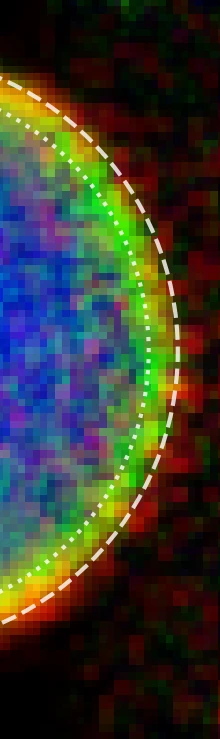
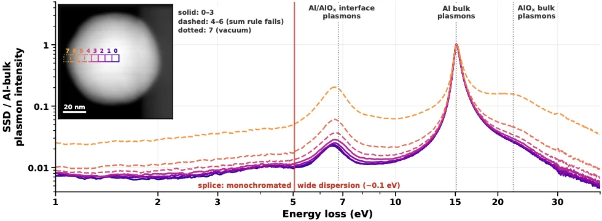
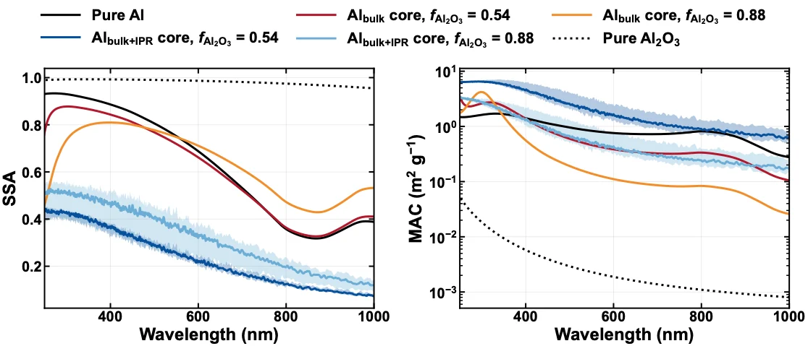
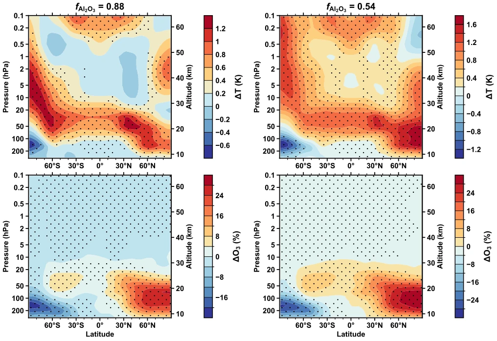

![Portrait of Prabhav Upadhyay]()
![]()
![]()
Do re-entering satellites really emit pure alumina, and how does it affect stratospheric warming and ozone?
![Illustration of satellite re-entry. A satellite de-orbits above 120 km, is wrapped in a plasma fireball at 100 to 90 km, fragments and ablates at 80 to 60 km, and leaves metal and metal-oxide particles of 10 to 100 nm at 70 to 50 km. Text: over the coming decades, satellite re-entries could inject 130 to 190 Gg of metal into the atmosphere every year, of which 80 to 115 Gg per year is aluminum. A table lists satellite metal mass fractions: aluminum 36.7 percent, copper 7.2, titanium 4.6, other metals 13.2, total metal 61.7. An inset shows an elemental map of an Al-core, Al2O3-shell laboratory analogue made by atomic layer deposition.](img/reentry_fig.webp)
A zero-dimensional thermochemical box model follows one parcel of re-entry aluminum vapor as it expands, entrains ambient air and cools, while its Al oxidizes through a detailed gas-phase Al/O mechanism.
Select the schematic for a condensed description of the method. It is unpublished, so it opens with an access code.
Electron energy loss spectroscopy signal
Interface forms between the Al core and Al2O3 shell


Interface plasmon resonance (IPR) enhances absorption
Optical properties of single particles (Dp = 100 nm)
fAl₂O₃: fraction of Al converted to Al2O3 shell

SOCOL-AER aerosol–chemistry–climate simulation
100 Gg/yr of core–shell particles (Dp = 100 nm) injected at 59–72 km, core modeled as Albulk only

![]()
![]()
![]()
![]()
![]()